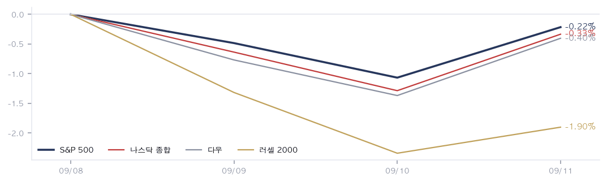
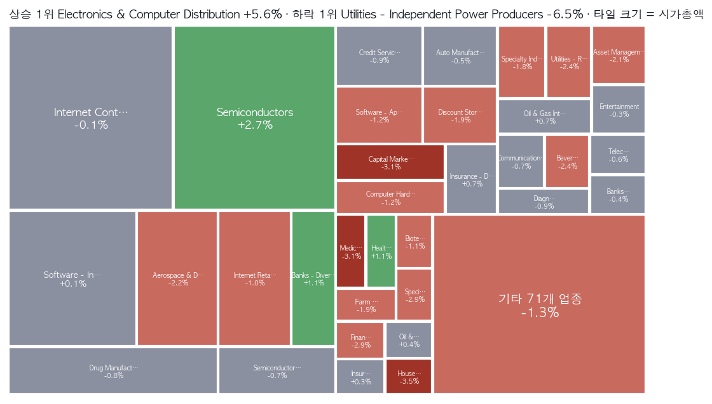
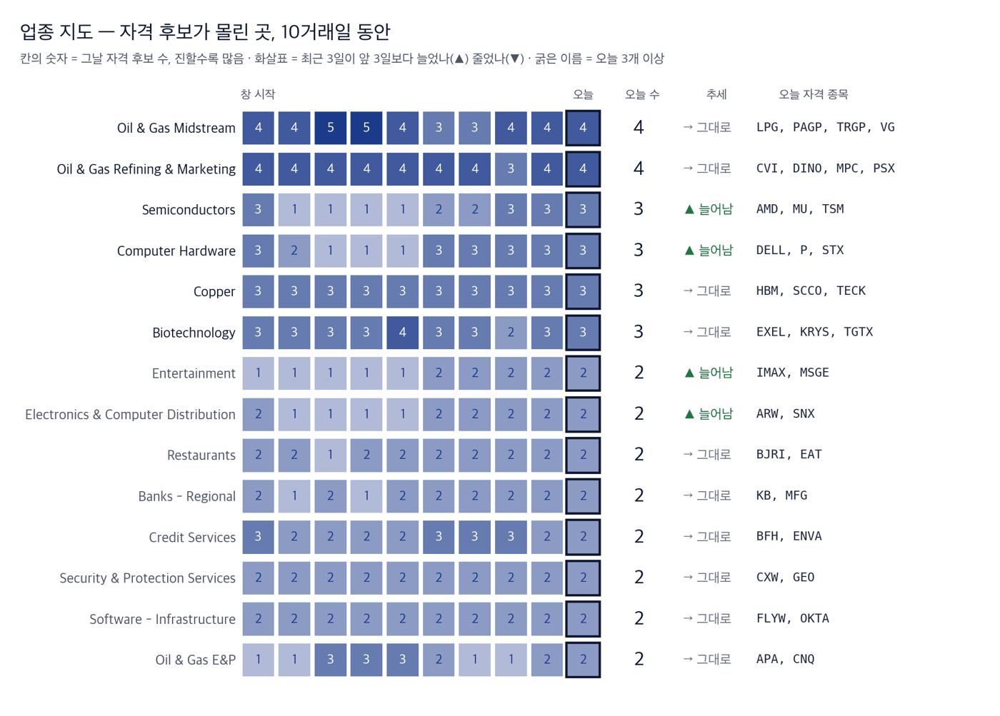
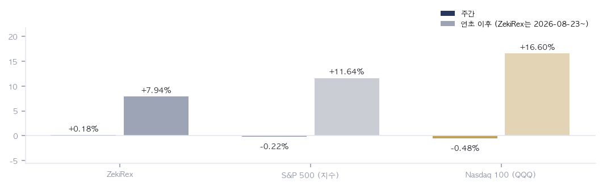

|
ZekiRex™ Apex US 주간 총결산 9/7~9/11
한 주가 남긴 것 · 1/2
데이터 기준 9/11 종가 |
ZekiRex™ |
|
|
| • | 구성 변경 모델 포트폴리오를 후보 순위 상위 4종목 동일비중으로 전면 교체했습니다. 체결은 뉴욕 9/11 종가입니다. | | • | 성과 표 표와 차트는 이전 구성의 기록입니다. 새 구성의 성과는 다음 주부터 셉니다. |
| |
한 주를 한 문장으로. 지수만 보면 아무 일도 없던 주입니다. 그 아래에서는 원가와 금리가 함께 올랐습니다. 유가가 화요일에 100달러를 넘었고 목요일에 더 올랐습니다. 30년물 미 국채 수익률은 18년 만의 최고를 지났습니다. 원재료 값과 돈값이 같은 주에 올라간 것입니다. 목요일까지 뉴욕 증시는 4거래일 연속 내렸습니다. 금요일에 8월 소비자물가가 3.4%로 예상과 같게 나오자 유가가 물러섰고 증시는 올랐습니다. (이데일리·블룸버그·인베스터스비즈니스데일리) 그 반등의 전제는 장이 끝난 뒤에 약해졌습니다. 사우디아라비아가 호르무즈 해협을 우회하려고 만든 동서 송유관을 닫았습니다. |
| 이번 주 반드시 알아야 할 5가지 |
한 주에 일어난 일 가운데 돈에 영향을 준 것만 5가지입니다. 각 항목은 사실, 왜 그런가, 그래서 무엇인가 순입니다. | 1 | 원유가 이번 주를 끌고 갔습니다 사실 WTI 원유는 이번 주 7.55% 올라 100.1달러로 마감했습니다. 브렌트유는 뉴욕 9/10 종가에 107.6달러였습니다. 금요일에는 두 유종 모두 물러섰습니다. 왜 그런데 에너지 업종은 거의 오르지 않았습니다. 정유·판매 업종은 0.30%, 종합 석유는 0.67% 올랐을 뿐입니다. 유전장비 업종은 오히려 3.48% 내렸습니다. 시장이 이 유가를 이익이 아니라 충격으로 읽었다는 뜻입니다. 행동 — 유가가 오르니 에너지주를 담는다는 판단은 이번 주 값으로는 뒷받침되지 않았습니다. 정유주나 유전장비주를 들고 계시다면 유가 자체보다 정제마진과 수요 지표를 확인해 보십시오. | | 2 | 30년물 5.35%, 18년 만의 최고 사실 30년물 미 국채 수익률이 5.35%를 지나 18년 만의 최고가 됐습니다. (머니투데이) 10년물은 이번 주 0.17%포인트 올라 4.97%로 마감했습니다. 왜 먼 미래의 이익으로 값이 매겨지는 자산일수록 할인율에 민감합니다. 이번 주 독립발전 업종이 6.50% 내린 자리가 그곳입니다. 태양광은 3.79% 내렸습니다. 행동 — 인공지능 전력 테마는 유가가 아니라 금리에 걸려 있습니다. 오클로(OKLO)는 16.37%, 엑스에너지(XE)는 22.04% 내렸습니다. 이 테마를 들고 계시다면 전력 수요 소식보다 장기 금리 방향을 먼저 봐야 합니다. | | 3 | 8월 소비자물가 3.4% — 근원은 웃돌았습니다 사실 8월 소비자물가가 1년 전보다 올랐고 예상치와 같았습니다. 근원 물가는 전망을 웃돌았습니다. (조선일보·동아일보) 왜 헤드라인 숫자는 안심을 주고 근원 숫자는 반대를 말했습니다. 시비에스뉴스는 이번 달 인상 가능성이 오히려 커졌다고 봤습니다. 금요일 반등은 지표 1개에 기댄 반등입니다. 행동 — 근거가 지표 1개라면 다음 지표 1개로 되돌아갈 수 있습니다. 성장주를 들고 계시다면 연준 회의 전에 비중을 늘리는 것은 회의 결과에 거는 일입니다. | | 4 | 지수가 가린 것 — 평균 종목은 훨씬 더 내렸습니다 사실 S&P 500은 4거래일 동안 0.22% 내렸습니다. 4일을 다 거래한 1,033종목의 평균은 1.2% 내렸습니다. 러셀 2000은 1.90% 내렸습니다. 왜 지수는 시가총액이 큰 종목이 끌고 갑니다. 이번 주에는 반도체 업종이 2.67% 올라 지수를 받쳐 줬습니다. 그 아래 작은 종목들은 다른 주를 보냈습니다. 행동 — 지수만 보고 조용한 주였다고 판단하면 계좌의 움직임과 어긋납니다. 대형 지수주가 아닌 종목을 들고 계시다면 이번 주 체감은 평균 쪽에 가깝습니다. | | 5 | 사우디 동서 송유관 폐쇄 — 우회로가 먼저 끊겼습니다 사실 이라크에서 발사된 무인기 공격 뒤 사우디아라비아가 동서 송유관을 닫았습니다. 예멘 후티는 홍해의 섬 1곳을 장악했습니다. (비비시·가디언) 왜 이 송유관은 호르무즈 해협을 건너뛰려고 만든 우회로입니다. 해협이 막혔을 때 쓰려던 대비책이 먼저 닫힌 것입니다. (사우스차이나모닝포스트) 행동 — 금요일 반등의 전제는 유가가 물러섰다는 것이었습니다. 그 전제가 주말 사이에 약해졌습니다. 에너지 비중이 큰 계좌라면 다음 주 초 유가가 지표 발표보다 먼저 값을 정할 수 있습니다. |
|
| 한 주 총결산 |
| 지표 | 금요일 종가 | 주간 | 연초 이후 | | S&P 500 | 7,657 | -0.22% | +11.64% | | 나스닥 종합 | 26,333 | -0.33% | +13.33% | | 다우 | 52,573 | -0.40% | +8.66% | | 러셀 2000 | 2,904 | -1.90% | +15.78% | | 비트코인 | $77,209 | -2.38% | -12.99% | | 달러인덱스 | 99.1 | +0.28% | +0.71% | | 미 국채 10년 | 4.97% | +0.17%p | +0.79%p | | WTI 원유 | $100.1 | +7.55% | +74.55% | | 금 | $4,366 | -0.63% | +1.20% |
표의 주간 등락은 뉴욕 9/8 종가에서 뉴욕 9/11 종가까지 4거래일입니다. 9/7은 노동절 휴장이었습니다. 연초 이후 열은 같은 종가 시리즈로 잰 값입니다. 지수 4개가 모두 내렸지만 폭이 다릅니다. 러셀 2000이 1.90% 내려 낙폭이 가장 컸고, S&P 500은 0.22%에 그쳤습니다. 작은 종목일수록 금리 부담을 크게 받았다는 뜻입니다. 원유는 7.55% 올랐고 금은 0.63% 내렸습니다. 지정학 위험이 커진 주에 금이 내린 것은 실질 금리가 올랐기 때문입니다. 비트코인은 2.38% 내렸고 연초 이후로는 12.99% 내렸습니다. |
| 한 주 움직인 것 |
주간 전체를 거래한 1,033종목 기준 · 따라가는 종목 1,039개 그 주 오른 종목 | SWKS SWKS | +17.21% | | HPQ HPQ | +13.83% | | QRVO QRVO | +12.09% | | GME GME | +11.96% | | HPE HPE | +10.82% | | NET NET | +7.82% | | AVT AVT | +7.80% | | CRUS CRUS | +7.25% | | ON ON | +7.12% | | WING WING | +6.99% |
| 그 주 내린 종목 | XE XE | -22.04% | | COO COO | -20.36% | | ALM ALM | -18.99% | | OKLO OKLO | -16.37% | | CASY CASY | -16.09% | | CHWY CHWY | -12.16% | | VRT VRT | -11.61% | | KRMN KRMN | -11.11% | | CRWV CRWV | -10.86% | | FDS FDS | -10.13% |
|
상하위는 뉴욕 9/8~9/11 종가 기준이며, 4일을 다 거래한 1,033종목만 넣었습니다. 오른 쪽에는 반도체와 컴퓨터 하드웨어가 줄지어 있습니다. 스카이웍스(SWKS) 17.21%, 에이치피(HPQ) 13.83%, 코르보(QRVO) 12.09%, 에이치피이(HPE) 10.82% 순입니다. 내린 쪽에는 원자력과 발전이 몰렸습니다. 쿠퍼(COO) 20.36%, 알몬티(ALM) 18.99%가 그 사이에 섞여 있습니다. 같은 주에 물건을 만드는 회사는 오르고 전기를 파는 회사는 내렸습니다. |
| 보유 종목의 한 주 |
| 종목 | 금요일 종가 | 주간 | 평가손익 | 손절가 | 손절 여유폭 | 일정 | | PACS PACS | $44.76 | — | +0.00% | $41.18 | +8.7% | 11/9 실적 | | STX STX | $830.17 | — | +0.00% | $763.76 | +8.7% | 10/27 실적 | | MU MU | $975.26 | -2.50% | +0.84% | $889.72 | +9.6% | 9/30 실적 | | DELL DELL | $567.29 | +6.26% | +28.32% | $406.71 | +39.5% | 11/27 실적 |
이번 주 보유 종목이 전면 교체됐습니다. 저희가 매일 규칙으로 매기는 후보 순위의 상위 4종목을 그대로 들고, 자리가 비면 다음 순서로 채웁니다. 종목을 고르는 사람이 없습니다. 새로 들어온 것은 팩스그룹(PACS, 요양시설)과 시게이트(STX, 저장장치)입니다. 나간 것은 에이에스엠엘(ASML)과 마라톤페트롤리엄(MPC)입니다. 마이크론(MU, 메모리)과 델테크놀로지스(DELL, 서버·하드웨어)는 남았고 수량만 조정했습니다. 체결은 뉴욕 9/11 종가로 기록했습니다. 그래서 표의 주간 칸이 비어 있습니다. 손절선은 체결가에서 −8%이며, 순위가 내려가는 것은 매도 사유가 아닙니다. 델은 금요일에 11% 올라 사상 최고를 기록했습니다. 인공지능 서버 수주잔고는 950억 달러였습니다. (시엔비시·마켓워치) 반대쪽도 적습니다. 닛케이아시아는 중국 시엑스엠티가 메모리 이익률에서 마이크론을 앞섰다고 봤습니다. 4종목 가운데 3종목이 메모리·서버·저장장치로 같은 수요에 묶여 있습니다. 반도체와 하드웨어가 함께 꺾이면 3종목이 함께 손절됩니다. |
|
|
다음 주를 위한 것 · 2/2
데이터 기준 9/11 종가 |
ZekiRex™ |
|
|
| 그 밖에 알아야 할 것 |
| 엔비디아, 앤스로픽 상장에 투자 협의 · 엔비디아가 앤스로픽의 대규모 기업공개에 투자하는 방안을 협의하고 있습니다. 관계자를 인용한 보도입니다. (The Straits Times · Channel NewsAsia) → 칩을 파는 쪽이 사는 쪽의 지분을 갖는 구조가 한 번 더 이어집니다. 이 분야의 수요 숫자를 읽을 때 함께 따져 볼 대목입니다. | | 백악관, 국방물자생산법으로 정제 능력 확대 검토 · 백악관이 국방물자생산법을 써서 미국의 정제 능력을 늘리는 방안을 검토하고 있습니다. 관계자를 인용한 보도입니다. (Reuters) → 정제 설비는 몇 년이 걸리므로 지금 값에는 닿지 않습니다. 다만 정부가 이번 일을 일시적인 것으로 보지 않는다는 신호입니다. | | 미 소비자심리, 연료비에 역대 2번째로 낮은 수준 · 미국 소비자심리가 연료비 부담으로 역대 2번째로 낮은 수준까지 내려갔습니다. 주택담보대출 금리가 7%를 넘자 주택건설주도 일제히 내렸습니다. (Money Today · Edaily) → 주유소 값과 대출 금리는 지표보다 늦게 움직입니다. 이번 주 충격이 시장 안에 머물지 않았다는 기록입니다. | | 델과 에이치피이, 금요일 S&P 500 상승 주도 · 금요일 S&P 500에서 가장 많이 오른 2종목은 델과 에이치피이였습니다. 알비시캐피털은 델에 26%의 추가 상승 여지를 제시했습니다. (MarketWatch · Edaily) → 델은 이번 주 교체에서 남긴 종목입니다. 기업용 하드웨어 수요가 금리 충격과 따로 움직이는지를 보는 자리입니다. | | 이번 주에 읽은 매체는 25곳이고, 서로 다른 발행사는 22곳입니다. 한 곳만 근거인 항목은 그 매체 이름을 그대로 적었습니다. |
|
한국과 미국을 잇는 것: 뉴욕에서 서울로 가는 길은 이번 주에도 금리였습니다. 한국 3년물 국채 금리가 34개월 만에 4%를 넘었고 코스피는 7000 아래로 내려갔습니다. (매경마켓·경향신문) 한국 대통령은 원유를 사 오는 곳을 넓히고 있어 걱정할 필요가 없다고 말했습니다. (연합뉴스) 미국 독자에게 중요한 것은 그 말의 옳고 그름이 아닙니다. 해협에서 나온 소식이 서울에는 환율과 정책금리를 거쳐 도착한다는 점입니다. 그래서 다음 주에 이 이야기가 가장 먼저 값으로 나타나는 곳은 원화와 한국 국채입니다. |
 5개 선은 뉴욕 9/8 종가를 100으로 놓은 지수 4개와 비트코인의 경로입니다. 종가 두 점만 보면 조용한 주이지만, 경로는 목요일까지 내리다가 금요일에 되돌린 모양입니다. 러셀 2000의 선이 가장 아래에 있습니다. 같은 주에도 작은 종목이 먼저 눌렸다는 뜻이며, 금리가 방향을 정한 주에는 이 간격이 더 넓어집니다. |
 막대는 4일을 다 거래한 1,033종목의 주간 등락 상하위 10개씩이고, 전체 평균은 1% 넘게 내렸습니다. 위쪽은 반도체와 컴퓨터 하드웨어가 줄지어 있고, 아래쪽은 원자력과 발전이 모여 있습니다. 위아래를 가른 것은 업종의 성격이 아니라 금리 민감도입니다. 따라서 이 그림은 이번 주 돈이 어디서 나와 어디로 갔는지를 보여 줍니다. |
 타일 크기는 업종의 시가총액이고, 짙은 초록이 상승, 짙은 붉음이 하락입니다. 수익률 1위는 전자·컴퓨터 유통의 5.62%이지만 그 타일은 작습니다. 지도에서 실제로 움직인 큰 칸은 반도체 하나뿐입니다. 가장 큰 칸인 인터넷 서비스는 거의 제자리였습니다. 따라서 이번 주는 넓은 자금 이동이 아니라 좁은 이동이었다는 뜻입니다. |
 막대는 105개 업종 가운데 상하위 10개이고, 업종 등락은 소속 종목 수익률의 단순평균입니다. 위쪽은 전자 유통·반도체·전자부품으로 전부 물건을 만들고 파는 쪽입니다. 아래쪽은 독립발전이 6.50% 내려 가장 낮고 태양광과 신재생 유틸리티가 뒤를 잇습니다. 자본을 먼저 쓰고 나중에 회수하는 사업일수록 금리 부담이 크다는 뜻입니다. |
대기 명단 — 규칙이 다음에 사는 순서 | 순서 | 종목 | 제키 강도 | 자격 지속 | 업종 | 고점 대비 |
|---|
| 1 | MU | 98 | 10일째 | Semiconductors | -19.6% | | 2 | PACS | 97 | 10일째 | Medical Care Facilities | -7.6% | | 3 | STX | 97 | 5일째 | Computer Hardware | -24.1% | | 4 | AMD | 96 | 3일째 | Semiconductors | -11.2% | | 5 | OKTA | 95 | 10일째 | Software - Infrastructure | -3.8% | | 6 | PSX | 93 | 아직 잡음 | Oil & Gas Refining & Marketing | -0.5% | | 7 | CXW | 93 | 10일째 | Security & Protection Services | -0.3% | | 8 | MTRN | 93 | 10일째 | Other Industrial Metals & Mining | -13.4% | | 9 | WT | 93 | 아직 잡음 | Asset Management | -4.4% | | 10 | CHEF | 92 | 10일째 | Food Distribution | -4.4% |
저희 규칙은 자리가 비면 이 순서로 삽니다 — 제키 강도가 높은 순, 같으면 값이 덜 흔들리는 순. 추천이 아니라 대기 순서의 서술입니다. 「아직 잡음」은 자격 1~2일째입니다. 업종 지도 — 매수 후보가 많은 업종 (2026-09-11 종가)  이 그림 읽는 법 | 한 줄 | 한 업종의 하루하루입니다. 왼쪽이 창 시작, 오른쪽 굵은 테두리가 오늘입니다. | | 칸의 숫자와 색 | 그날 저희 기준을 넘은 종목 수입니다. 진할수록 많습니다. 값의 세기가 아니라 **몇 종목이 자격을 갖췄나**입니다. | | 오른쪽 | 오늘의 종목 수, 추세(▲ 최근 3일이 앞 3일보다 늘어남 · ▼ 줄어듦 · → 그대로), 그리고 오늘 자격을 갖춘 종목입니다. 굵은 업종 이름은 오늘 3개 이상입니다. | | 왜 순위가 아닌가 | 하루치 순위는 72%가 매일 바뀌고 큰 점프의 46%가 되돌아옵니다(실측). 며칠 지속 카운트는 그렇지 않습니다. |
이번 주 진입·탈락 진입 (2026-09-10 대비): ALNT
탈락: 없음
창 전체(10거래일) 내내 자격을 지킨 종목 41개. 왜 들어오고 나갔는지는 적지 않습니다 — 원천에 이유가 없고, 저희는 추정하지 않습니다. 관측용이며 매매 신호가 아닙니다. 저희 규칙에는 업종 순환 논리가 없고, 2026-08-31 업종 자금 흐름 검정에서 예측력은 확인되지 않았습니다. 하루 순위가 아니라 며칠 지속되는가를 셉니다. |
 쌍막대의 왼쪽은 뉴욕 9/8~9/11 주간, 오른쪽 옅은 막대는 연초 이후입니다. 주간 막대는 이전 구성의 기록이며, 금요일 종가로 교체한 새 구성의 성과는 다음 주부터 셉니다. 연초 이후 열은 지수만 비교하십시오. |
| 다음 주 반드시 알아야 할 5가지 |
이번 주 시사점에서 이어지는 5가지입니다. 무엇을 보면 되는지까지 적었습니다. | 1 | 9/15~16 연준 회의 — 몇 년 만의 인상 사실 연준이 9/15~16 회의에서 몇 년 만에 정책금리를 올릴 것으로 보입니다. (월스트리트저널·배런스) 왜 이미 값에 반영된 것은 인상 1회입니다. 값을 새로 정하는 것은 그 뒤에 몇 번이 더 오느냐입니다. 성장주와 인공지능 전력 테마가 걸려 있는 것이 바로 그 기대입니다. 행동 — 회의 결과보다 회의 뒤 문장이 중요합니다. 이번 주에 눌린 종목을 들고 계시다면 이 하루가 다음 몇 주의 할인율을 정합니다. | | 2 | 9/18 일본은행 — 1.25%로 인상 전망 사실 일본은행이 9/18 회의에서 정책금리를 1.25%로 올릴 것으로 보입니다. (재팬타임스·닛케이아시아) 왜 일본은 오랫동안 가장 싸게 빌릴 수 있는 곳이었습니다. 그 조달처가 비싸지면 그 돈으로 산 해외 자산부터 되감깁니다. 미 장기 국채가 같은 주에 먼저 팔립니다. 행동 — 이번 주에 18년 만의 최고를 찍은 장기 금리가 한 번 더 오르면, 이번 주에 내린 자산이 다시 내립니다. 엔화 조달과 얽힌 자산을 들고 계시다면 이 하루를 보셔야 합니다. | | 3 | 9/14 (월) 대형 은행 1곳 제재 발표 사실 스콧 베선트 재무장관이 이란 전략의 일부로 9/14에 대형 은행 1곳을 제재한다고 밝혔습니다. 이름은 아직 공개되지 않았습니다. (시엔비시) 왜 이름이 나오기 전까지는 어느 은행인지 모른다는 사실 자체가 유럽과 걸프 은행주 전체에 얹힌 부담입니다. 발표 뒤에는 한 종목의 문제로 좁아집니다. 행동 — 유럽 은행주를 묶음으로 들고 계시다면 발표 전까지는 개별 종목이 아니라 묶음 전체가 흔들릴 수 있습니다. 이름이 나온 뒤가 오히려 구분이 되는 자리입니다. | | 4 | 사우디 동서 송유관 재개 여부 (일정 미정) 사실 사우디아라비아가 닫은 동서 송유관이 언제 다시 열리는지는 아직 발표되지 않았습니다. 왜 금요일 반등의 전제는 유가가 물러섰다는 것이었고, 그 전제가 이 송유관에 달려 있습니다. 백악관이 국방물자생산법으로 정제 능력을 늘리는 방안을 검토한다고 로이터가 전했지만, 정제 설비는 몇 년이 걸립니다. 행동 — 다음 주 초에 유가가 다시 세 자릿수로 올라서면 금요일 반등의 근거가 사라집니다. 연료비가 원가의 큰 몫인 종목을 들고 계시다면 이 소식을 먼저 확인해 보십시오. | | 5 | 연준 회의 주간의 소매판매 — 가계가 감당하는가 사실 연준 회의와 같은 주에 소매판매 지표가 나옵니다. (월스트리트저널·배런스) 왜 이번 주 미국 소비자심리는 연료비 때문에 역대 2번째로 낮았습니다. 주택담보대출 금리가 7%를 넘자 주택건설주가 일제히 내렸습니다. 소매판매는 그 충격이 실제 지출까지 왔는지를 봅니다. (머니투데이·이데일리) 행동 — 가계 지출이 꺾이면 인상 경로가 짧아지고, 버티면 길어집니다. 유통주나 외식주를 들고 계시다면 이 지표가 인상 횟수를 정합니다. |
|
| 다음 주 핵심 |
| 9/14 (월) | 미 재무부, 대형 은행 1곳 제재 발표 이름이 나오기 전까지는 유럽·걸프 은행주 전체가 함께 흔들립니다. | | 9/16 (수) | 연준 금리 결정 (9/15~16 회의) 인상 1회는 값에 있고, 그 뒤 몇 번이 더 오느냐가 남았습니다. | | 9/16 (수) | 미 소매판매 (연준 회의 주간) 연료비 충격이 실제 지출까지 왔는지를 처음으로 보여 줍니다. | | 9/18 (금) | 일본은행 금리 결정 가장 싼 조달처가 비싸지면 미 장기 국채부터 팔립니다. | | 일정 미정 | 사우디 동서 송유관 재개 금요일 반등의 전제가 이 한 줄에 달려 있습니다. |
|
다음 주는 이번 주가 세운 기울기를 정책이 확인하는 주입니다. 연준이 9/15~16에 결정하고, 일본은행이 9/18에 뒤따릅니다. 두 회의 모두 금리를 올리는 쪽입니다. 이번 주에 내린 것은 값이 비싼 종목이 아니라 먼 미래를 파는 종목이었습니다. 독립발전과 원자력이 그 자리에 있었고, 반도체와 컴퓨터 하드웨어는 반대쪽에 있었습니다. 두 회의가 인상 경로를 길게 그리면 이 구분은 다음 주에도 그대로 갑니다. 다만 유가는 정책과 상관없이 움직입니다. 사우디 송유관이 언제 열리는지가 먼저 값을 정할 수 있습니다. 저희 보유 4종목 중 3종목이 반도체와 하드웨어 쪽에 있다는 것은, 이 구분이 뒤집히면 3종목이 함께 손실을 본다는 뜻이기도 합니다. |
| 출처: 야후 파이낸스, 16:00 ET · 미 노동부 노동통계국 · 미 재무부 공시 수익률 곡선 · 이데일리·머니투데이·연합뉴스·조선일보·동아일보·블룸버그·로이터·시엔비시·월스트리트저널·배런스·마켓워치·인베스터스비즈니스데일리·비비시·가디언·사우스차이나모닝포스트·재팬타임스·닛케이아시아·스트레이츠타임스·채널뉴스아시아·시비에스뉴스·매경마켓·경향신문 · 등급·순위·업종 집계·판정은 전부 ZekiRex 자체 산출입니다 |
|
본 리포트는 정보 제공 목적이며 개별 투자 자문이 아닙니다. ZekiRex™ Apex US는 1,000만 달러 규모의 모의 포트폴리오를 규칙 기반으로 운용합니다 — 실제 계좌도, 주문도, 체결도 없습니다. 표시된 성과에는 수수료와 세금, 매매 시 가격 미끄러짐이 반영되지 않았습니다. 종목 자료에는 상장폐지된 회사가 빠져 있습니다. 그래서 성과가 실제보다 높게 나오는 치우침(생존편향)이 있습니다. 과거의 성과는 미래를 보장하지 않으며, 투자에는 원금 손실 위험이 따릅니다. |
| This is the Rex Way, ZekiRex™ |